Six Flags Magic Mountain Summer 2010
Ok. So you've probably been wondering "Why hasn't Incrediblecoasters gone to SFMM yet?" Well, we at Incrediblecoasters didn't want to create a bunch of updates for every insignificant visit to SFMM we took over the summer. So we decided that it would be best to just combinde all of our summer updates into one big update. Anyways, onto Visit #1. We are currently standing in line to buy two of Cody's friends their tickets since the Free Friend Coupon expired.
 "DAMN YOU STUPID EXPIRED COUPON!!!!!!"
"DAMN YOU STUPID EXPIRED COUPON!!!!!!"
 First ride of the day, Scream Marathon.
First ride of the day, Scream Marathon.
All right. Time for lunch at Wendys.
As if those fries didn't already have enough salt on them.
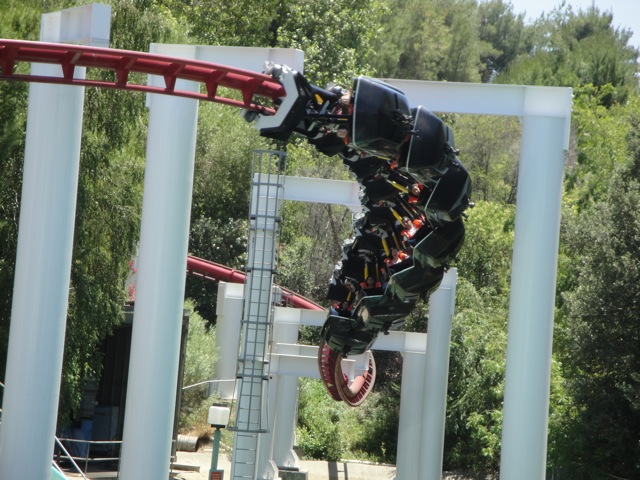
Up next, more Ninja goodness. (Oh yeah. the Karate Kid wraps are now gone!!!!) =)
 We ended up getting stuck on Ninja's Lifthill. (The other one.) It wasn't fun.
We ended up getting stuck on Ninja's Lifthill. (The other one.) It wasn't fun.
Sweet. I could use a good water ride right now.
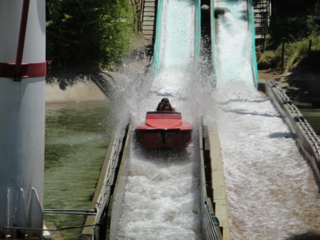
I'm not a big water ride person, but they are great on days like this.
 Ok. I didn't want to get that wet. Better ride Terminator to dry off.
Ok. I didn't want to get that wet. Better ride Terminator to dry off.
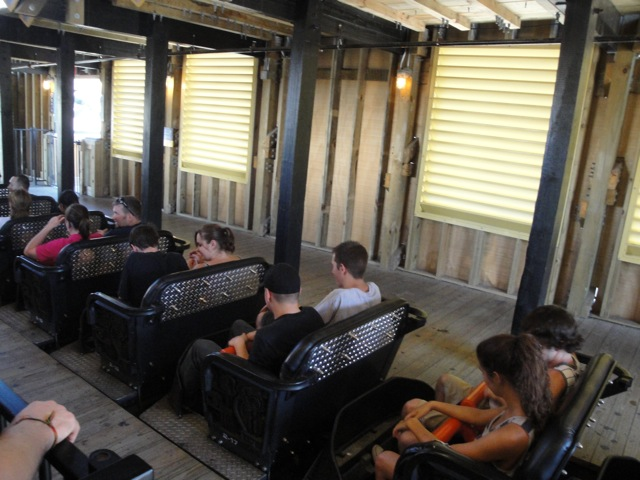
Yup. Terminator's audio is officially gone. =(
On the brightside, Studio 6F opened.
So far, this doesn't seem like a very Incrediblecoasters friendly place. Just a bunch of clothes.
 Ok. That's better, A place to relax. Much more Incrediblecoasters friendly.
Ok. That's better, A place to relax. Much more Incrediblecoasters friendly.
But the highlight of Studio 6F, and the crowning achievement of all that Six Flags has done for SFMM in 2010 is without a doubt, the Freestyle Coke Machine.
I think I have fallen in love.
In my hand, I hold Grape Vault. And it kicks major ass.
I know that's you Original X on the sign.
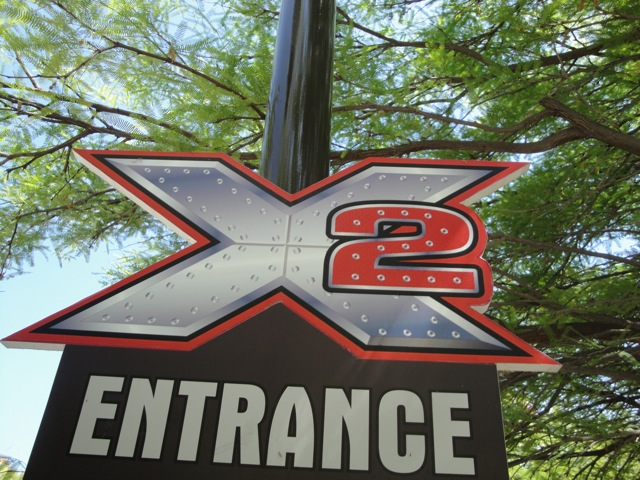
And of course, we went on X2. For obvious reasons.
Not only does SFMM now have a Freestyle Coke Machine, but they also got a new Freestyle Gum Support for X2.
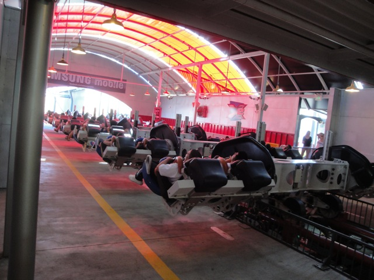
X2 broke down on us. God Damn!!! That's two rides I got stuck on in one day. I think we're cursed.
 Hows it going Six Flags Great Adventure fanboys?
Hows it going Six Flags Great Adventure fanboys?
Revolution has now become "Grown Ups. The Ride."
 It actually looked like a good movie. (I was going to see it, but I ended up watching Toy Story 3 instead.)
It actually looked like a good movie. (I was going to see it, but I ended up watching Toy Story 3 instead.)
You people may have soaked me with those water cannons, but at least you didn't flip me off and throw Powerade at me. *cough* Mr. Road Rage Asshole. *cough*
Oh yeah. Speaking of Mr. Road Rage Asshole, I have to tell you the story. Basically, I was driving to Six Flags Magic Mountain, and I was driving in the slow lane. Now I don't speed (at least I didn't back in 2010), and this insane guy going 90 mph nearly rear ends me. Goes around me, flips me off and throws a bottle of Powerade at my car before going back to driving 100 mph and completely vanishing. Uhh...All I have to say is "F*ck you and I hope you got a big fat EXPENSIVE speeding ticket as well as a ticket for littering.
Visit #2. Up next, how about a Goliath Marathon.
 I've really been loving Goliath recently. It's just sort of grown on me this summer.
I've really been loving Goliath recently. It's just sort of grown on me this summer.
Time to go back to my old ways and soak myself on Tidal Wave's Bridge.
And now, I just wait for the water to come.
Today's choice of beverage would be Peach Sprite.
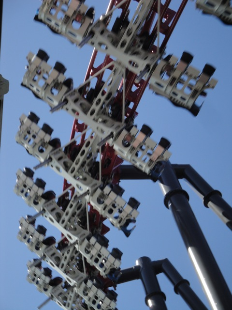
Another day at SFMM, another ride on X2.
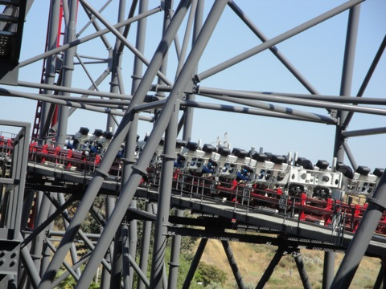
X2 kicked my ass. And I loved every second of it.
Ooh. Artsy shot.
 More Incrediblecoasters news. The front of these reciepts always turns brown. Even if the reciept is facing with it's back to the sun.
More Incrediblecoasters news. The front of these reciepts always turns brown. Even if the reciept is facing with it's back to the sun.
Ok, so I was REALLY bored one day and heard there was a fair just in Santa Paula, and I figured I go on over there. (I'm including this in the update because I want to share this story on Incrediblecoasters, but don't want to create a whole update for it and figured it would fit in with the rest of this update.)
Unfortunetly, the Santa Paula Fair SUCKED!!!!! COMPLETE WASTE OF MY MONEY!!!!!
You see that Rock-O-Plane in the background, that was the ONLY ride I rode that day. And I paid $14.00 for it. NOT WORTH IT!!!!
Visit #3. This visit SUCKED because as you can see, it was PACKED today!!!! It was about as bad as last year.
Ooh. Skittles Tram!!!
 Hmm. I keep hearing rumors that Superman's gonna have a big makeover. Is this true?
Hmm. I keep hearing rumors that Superman's gonna have a big makeover. Is this true?
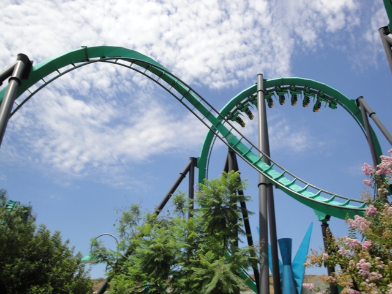
Well at least there is some good news about this visit.
Riddlers got it's single riders line back! THANK YOU SIX FLAGS!!!! THANK YOU SO MUCH!!! YOU GUYS ARE AWESOME!!!! THIS IS MUCH BETTER THAN THE FREESTYLE COKE MACHINE!!!! AND I F*CKING LOVE THAT THING!!!!!! =)
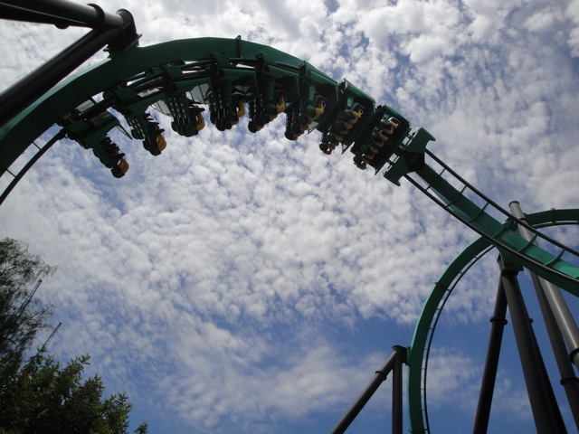
Single Riders Riddlers Revenge Goodness.
Well, at least Longhorns doesn't have a long line.
Boo to the Freestyle Coke Machine being down. Because of that, I had to get my soda from the Soda Shack, which sucked. Warning, Long Incrediblecoasters Rant down below.
IT DOES NOT TAKE 10 MINUTES TO ORDER A DRINK!!!! I ONLY HAD TWO GROUPS AHEAD OF ME!!! BUT IT WAS STILL A 20 MINUTE WAIT!!! I SWEAR TO GOD!!!! ARE PEOPLE THIS STUPID ABOUT MAKING A SIMPLE CHOICE!!!! THE PEOPLE IN FRONT OF ME WERE ACTING LIKE THIS!!!!! "Mom, I want a Coke." "No Timmy, that has caffine in it. Get a Powerade." "But I don't want a powerade Mom. I want a Coke." "But Timmy, that has caffine. Powerade doesn't even have carbonation in it." Fast foreword a longass time. "Ok. That'll be $12.99. Oh. Honey, should we pay the man with a ten dollar bill and three ones?" "Actually, I feel like giving him two 5s and three 1s." "Bob, I really think we should use a ten because...Blah Blah Blah Blah." Fast foreword a longass time. "I need my money." "Huh?" "I need the money for those drinks." "Oh yeah." JUST PICK A F*CKING BEVERAGE AND STOP WASTING MY LIFE!!!!!!! IF YOU REGRET YOUR BEVERAGE CHOICE, IT'S NOT THE END OF THE F*CKING WORLD!!! JUST GO BUY ANOTHER ONE, OR JUST WAIT TILL YOU GET HOME AND THEN GO TO VONS AND BUY A TWELVE PACK OF IT THERE!!! JUST SHUT THE F*CK UP, PAY UP, AND STOP WASTING MY LIFE!!!!!!!!!!!!! (You don't know how hard it was to not scream this at those people.)
"Hey Gertrude! How's it going?"
 Allie still hadn't been on Terminator, so we had to go do that for her.
Allie still hadn't been on Terminator, so we had to go do that for her.
"Hmm. Does this go to anything?"
 "Ok, I know I'm a Terminator Virgin and all, but does that really happen to my face during the experience?"
"Ok, I know I'm a Terminator Virgin and all, but does that really happen to my face during the experience?"
Ok. Even X2 was beyond our limit. (And we have a VERY high limit for X2. 2 hours. That's a lot longer than most rides.) And if X2 is beyond our limits, then that's the signal to GET THE HELL OUT OF HERE!!!!!
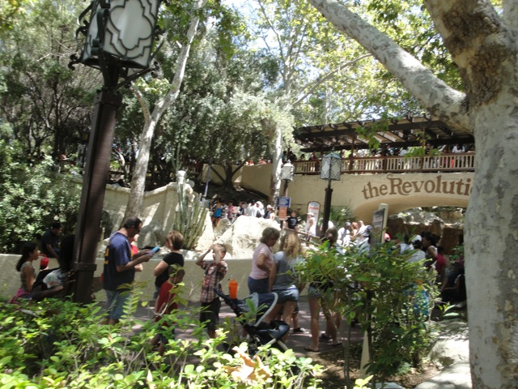
I think I just vomited with disgust.
Not only is it crowded beyond belief, but the crowds are STILL GROWING!!!!!
Well today sucked.
 Looks like Hurricane Harbor is just as disgustingly packed as Six Flags Magic Mountain.
Looks like Hurricane Harbor is just as disgustingly packed as Six Flags Magic Mountain.
If you think you're going to have fun with crowds of this size, you better either get a Gold Q Bot or get yourself checked to see if you're mentaly retarded.
If you look closely, you can see that the OVERFLOW PARKING LOT IS FULL!!!!
To make this worse, it was boiling out today.
Visit #4. Looks like it's true. Superman is down until Late 2011 for a big makeover.
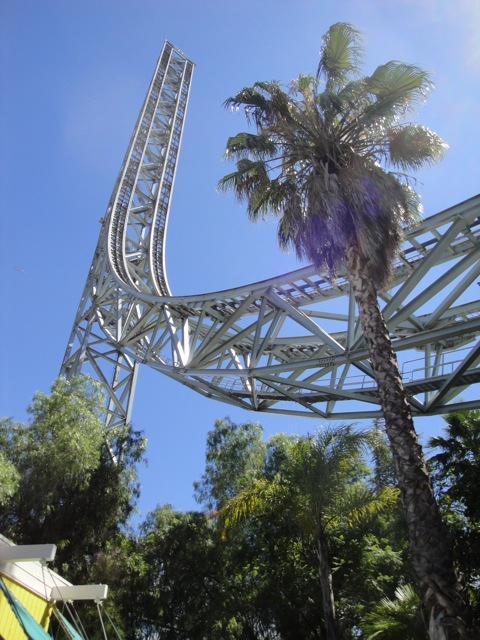
This better be good.
 For some reason, Scream NEVER has a long line. It can be packed, and Scream will still be empty.
For some reason, Scream NEVER has a long line. It can be packed, and Scream will still be empty.
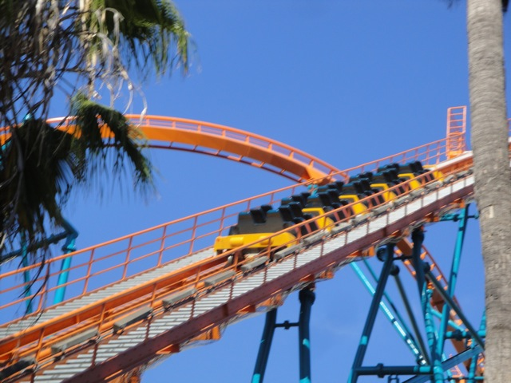
For some idiotic reason, we got in line for Goliath, KNOWING that it was broken down, and waited an hour and a half for it to open until we just left. I never even saw it run at all today.
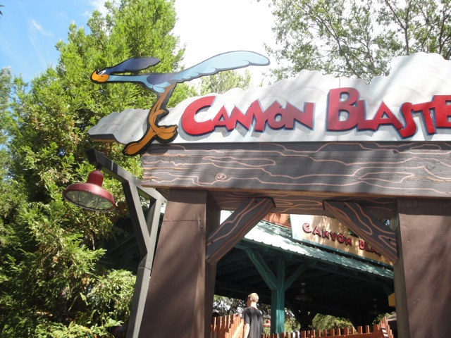
Yup. Time for some credit whoring.
I feel sadder and more pathetic with each ride.
Dude. You may be from Australia, but that doesn't mean you should go out and start being a credit whore.
Ok. Revolution has converted itself into "The other Guys. The Ride."
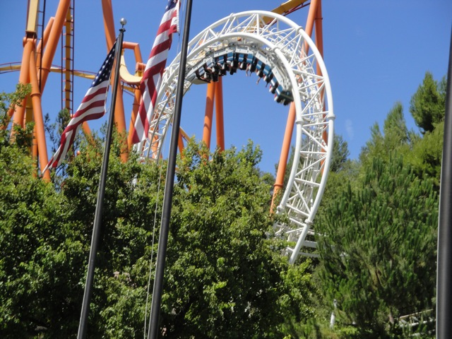
Revolution wasn't running that well today.
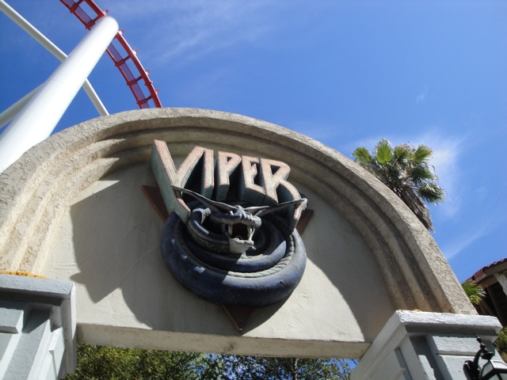
Ok. I've got some good news and some bad news about Viper.
The good news. Viper now has a Single Riders Line!!!! YAY!!!!!! =)
The bad news. Hair Gel is back. =(
 Tatsu was indeed our final ride of the final visit of the update.
Tatsu was indeed our final ride of the final visit of the update.
 Well, it was interesting summer with good visits to SFMM, bad visits to SFMM, and a crappy fair.
Well, it was interesting summer with good visits to SFMM, bad visits to SFMM, and a crappy fair.
Home